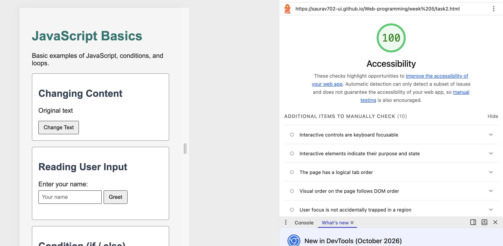

Accessibility Fixes: Week 9
Lighthouse Results
| Stage | Accessibility Score | Failed Audits |
|---|---|---|
| Before | 82 | 2 |
| After | 100 | 0 |
Tool: Chrome DevTools Lighthouse, Accessibility category.


Added labels to form inputs
Audit: Form elements do not have associated labels.
Why it matters: Screen readers need labels to explain the purpose of form inputs.
Before
<p>Enter a score:</p>
<input type="number" id="scoreInput">After
<label for="scoreInput">
Enter a score:
</label>
<input type="number" id="scoreInput">The same improvement was applied to the name input and the number input.
Added a main landmark
Audit: Document does not have a main landmark.
Why it matters: A main landmark helps screen reader users navigate directly to the main content.
Before
<body>
<h1>JavaScript Basics</h1>
<section>...</section>
</body>After
<body>
<main>
<h1>JavaScript Basics</h1>
<section>...</section>
</main>
</body>Added a skip link
Keyboard users can skip directly to the main content instead of navigating through every element.
HTML
<a href="#main-content" class="skip-link">
Skip to main content
</a>CSS
.skip-link {
position: absolute;
left: -9999px;
}
.skip-link:focus {
left: .5rem;
top: .5rem;
}The link becomes visible when a keyboard user presses Tab and focuses on it.
Other Improvements
- Added a viewport meta tag for mobile devices.
- Added visible keyboard focus outlines.
- Added aria-live attributes to result messages.
- Improved form validation.
- Used semantic HTML elements such as main and section.
Final Project: JavaScript Basics Website